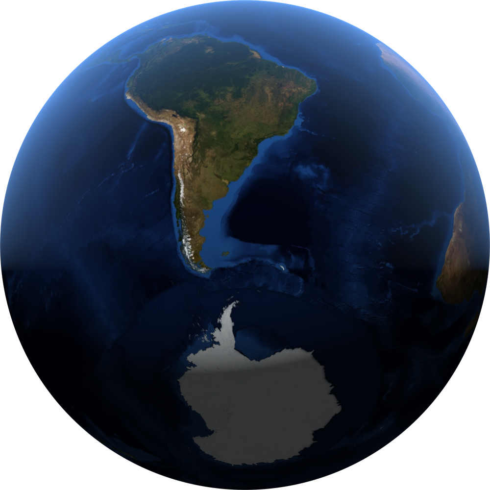

01
Desenvolvimento
Sistemas, aplicações WebGIS e painéis geoespaciais sob medida.
Promova a transformação digital do seu negócio com o poder da localização.

Imagem de satélite e relevo em 3D, direto no navegador. Escolha um local para voar até ele e abrir o Street View.
Sistemas, aplicações WebGIS e painéis geoespaciais sob medida.
Bases cartográficas e dados geoespaciais conectados aos sistemas que você já usa.
Análise territorial e leitura dos seus dados para orientar prioridades.
Acompanhamento contínuo de sistemas e bases geográficas.